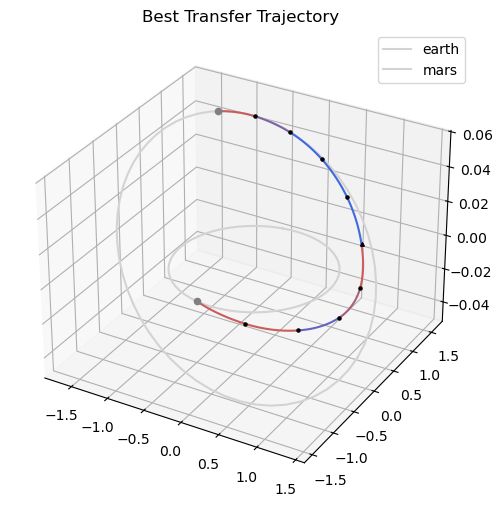
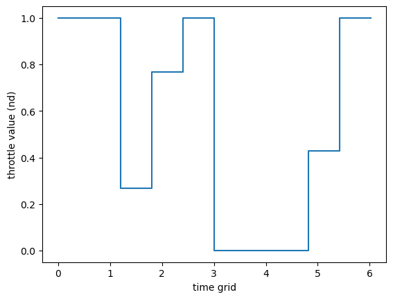
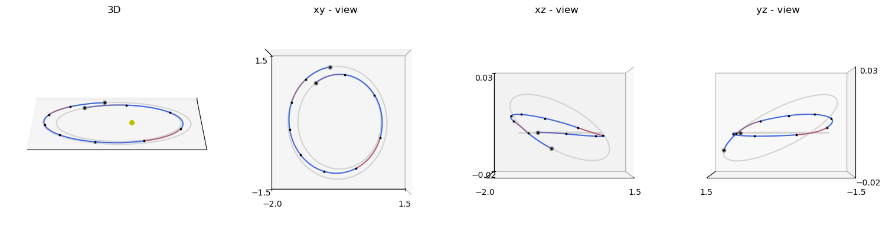
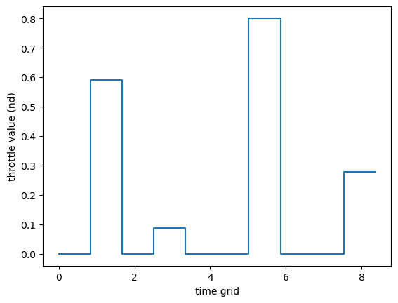
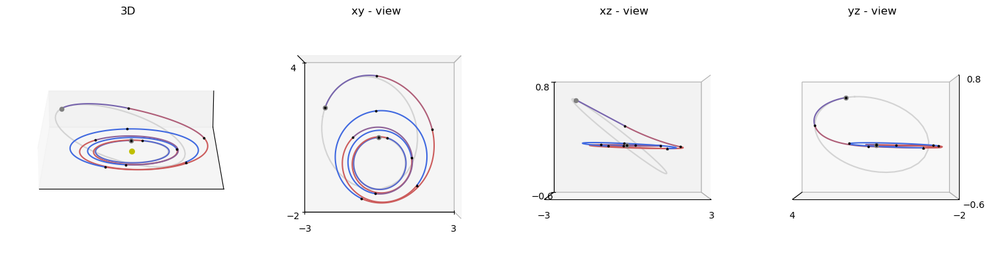
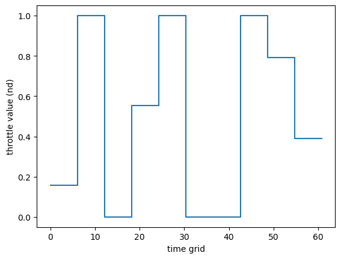
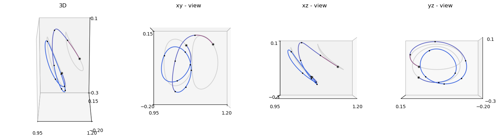
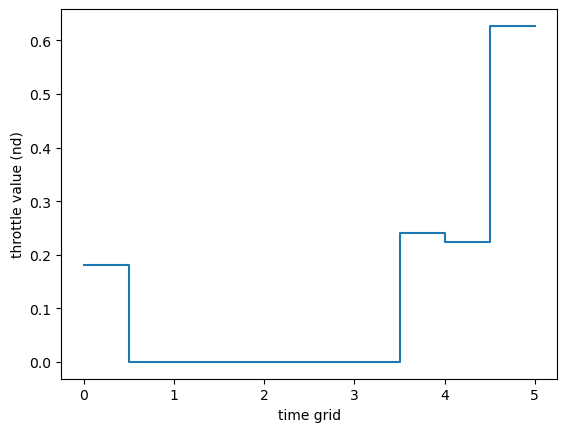
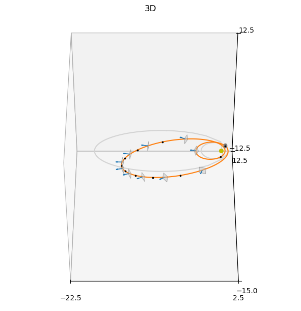

Zero-Order Hold: Planet-to-Planet Transfers#
This tutorial shows how to solve low-thrust trajectory optimisation problems using the pykep.trajopt.zoh_pl2pl class, which wraps a Zero-Order Hold (ZOH) transcription [IHA+26] for planet-to-planet transfers with a free departure epoch.
We cover two complementary use cases:
1. Custom Earth–Mars transfer — the primary intended use of pykep.trajopt.zoh_pl2pl, illustrating how to set up physical units, Taylor-adaptive integrators, and bounds for a realistic mission.
2. TOPS moving-boundary benchmarks — four benchmark families from the TOPS database where boundary states are retrieved from planetary ephemerides at the optimised departure epoch:
pykep.trajopt.gym.tops_twobody_mb(two-body, Cartesian state)pykep.trajopt.gym.tops_mee_mb(two-body, modified equinoctial elements)pykep.trajopt.gym.tops_cr3bp_mb(CR3BP)pykep.trajopt.gym.tops_ss_mb(solar sailing)
All problems are Non-Linear Programming Problems in a UDP format compatible with pygmo [BI20], and follow the same workflow:
instantiate a UDP,
build
pg.problem,verify analytical gradients against finite differences,
solve with IPOPT via multiple random restarts,
inspect the trajectory and controls.
For API details and background material, see:
Decision vector#
The pykep.trajopt.zoh_pl2pl decision vector is:
where:
\(t_0\) is the departure epoch (MJD2000),
\(m_f\) is the final mass,
\((T_k, i_{xk}, i_{yk}, i_{zk})\) is the segment thrust magnitude and direction,
\(tof\) is total time of flight,
\(w_k\) are optional softmax weights (only for
time_encoding="softmax").
Uniform vs softmax time grids#
With time_encoding="uniform", segment durations are equal. With time_encoding="softmax", durations are learned via weights and satisfy positivity and partition of unity:
We start with the Earth–Mars custom example and then repeat the same solver pipeline on the TOPS moving-boundary benchmarks.
This makes the notebook useful as both:
a practical guide for setting up
zoh_pl2plfrom scratch with real ephemerides, anda template for TOPS moving-boundary optimisation studies.
First, import the required packages.
# Core numerics, optimization, and plotting imports used throughout the tutorial
import pykep as pk
import heyoka as hy
import numpy as np
import pygmo as pg
import pygmo_plugins_nonfree as ppnf
from matplotlib import pyplot as plt
Lets setup the solver
# IPOPT reference setup used consistently across all sections
ipopt_integer_options = {
"max_iter": 1000,
}
ipopt_numeric_options = {
"tol": 1e-10,
}
ipopt_string_options = {
"sb": "yes",
}
ipopt = pg.ipopt()
ipopt.set_integer_options(ipopt_integer_options)
ipopt.set_numeric_options(ipopt_numeric_options)
ipopt.set_string_options(ipopt_string_options)
algo = pg.algorithm(ipopt)
An Earth–Mars transfer#
We demonstrate pykep.trajopt.zoh_pl2pl on a realistic Earth-to-Mars transfer. This is the primary use case of the class.
The main setup effort lies in non-dimensionalising the problem: the Taylor-adaptive integrators require that the central-body gravitational parameter equals 1, so all physical quantities must be expressed in a consistent set of units built around \(L = 1\,\text{AU}\) and \(\mu_\odot\).
# Problem data (SI units)
mu = pk.MU_SUN
max_thrust = 0.4 # (N)
isp = 3000 # (s)
veff = isp * pk.G0 # (m/s)
# Initial mass
ms = 1500.0 # (kg)
# tof bounds (in days)
tof_bounds = [100.0, 350.0]
# Number of segments
nseg = 10
# Source and destination planets (return m, m/s as a function of an epoch (days))
earth = pk.planet(pk.udpla.jpl_lp(body="EARTH"))
mars = pk.planet(pk.udpla.jpl_lp(body="MARS"))
# Lower tolerances result in higher speed (the needed tolerance depends on the orbital regime)
tol = 1e-10
tol_var = 1e-6
# We instantiate ZOH Taylor integrators for Keplerian dynamics.
ta = pk.ta.get_zoh_kep(tol)
ta_var = pk.ta.get_zoh_kep_var(tol_var)
# Units that will be used in the ZOH Taylor integrator.
L = pk.AU # eph will return SI units, we divide by this number.
MU = mu # (central body mu must be 1 as a requirement of pk.ta.get_zoh_kep)
TIME = np.sqrt(L**3 / MU)
V = np.sqrt(MU / L)
ACC = V**2 / L
MASS = ms
F = MASS * ACC
# Non dimensional quantities.
ms_nd = ms / MASS
veff_nd = veff / V
tof_bounds_nd = [it * pk.DAY2SEC / TIME for it in tof_bounds]
max_thrust_nd = max_thrust / F
# Creating Taylor-Adaptive Integrators
# The zoh_pl2pl class requires Taylor-adaptive integrators for trajectory propagation.
# 1. Nominal dynamics integrator (for fitness evaluation)
# 2. Variational dynamics integrator (for gradient computation)
ta.pars[4] = 1.0 / veff_nd
ta_var.pars[4] = 1.0 / veff_nd
print(f"Nominal integrator state dimension: {len(ta.state)}")
print(f"Variational integrator state dimension: {len(ta_var.state)}")
Nominal integrator state dimension: 7
Variational integrator state dimension: 84
udp = pk.trajopt.zoh_pl2pl(
pls=earth,
plf=mars,
ms=ms_nd,
nseg=nseg,
cut=0.5,
t0_bounds=[7360, 8300.0], # (MJD2000)
tof_bounds=tof_bounds_nd,
mf_bounds=[2 / 3, 1.0],
vinf_dep_bounds=[0.0, 0.033574293988433881], # (1.0 km/s in non dimensional units)
vinf_arr_bounds=[0.0, 0.0], # a randevouz
tas=(ta, ta_var),
max_thrust=max_thrust_nd,
time_encoding="uniform",
inequalities_for_tc=True,
L=L,
V=V,
)
print("UDP instance created successfully")
print(f"Gradient: {udp.has_gradient()}")
print(f"Inequality constraints:", udp.inequalities_for_tc)
UDP instance created successfully
Gradient: True
Inequality constraints: True
# Wrap into a pygmo problem and set feasibility tolerance for reporting
prob = pg.problem(udp)
prob.c_tol = 1e-6 # This affects pagmo feasibility checks, not IPOPT's internal tol
# Compare analytical and finite-difference gradients at a random initial point
pop = pg.population(prob, 1)
grad_err = pg.estimate_gradient_h(udp.fitness, pop.champion_x, dx=1e-8) - udp.gradient(pop.champion_x)
grad_err.max(), grad_err.min()
(2.5247036198994266e-05, -1.4880462563482411e-05)
# Solve via multiple random restarts; collect feasible results
seed = 42
pseudorandom = lambda i: (1103515245 * (i + seed) + 12345) % 2**31
masses = []
xs = []
for i in range(10):
pop = pg.population(prob, 1, seed=pseudorandom(i))
pop = algo.evolve(pop)
if prob.feasibility_f(pop.champion_f):
print(".", end="")
masses.append(pop.champion_x[1])
xs.append(pop.champion_x)
else:
print("x", end="")
print("\nBest mass is: ", np.max(masses) * MASS)
print("Worst mass is: ", np.min(masses) * MASS)
best_idx = np.argmax(masses)
x.........
Best mass is: 1275.38212059
Worst mass is: 1255.85320061
if len(xs) > 0:
fig = plt.figure(figsize=(6, 6))
ax = fig.add_subplot(111, projection="3d")
t0 = udp.compute_t0(xs[best_idx])
ax = pk.plot.add_planet_orbit(
ax=ax, pla=earth, label="earth", units=L, color="lightgray"
)
ax = pk.plot.add_planet_orbit(
ax=ax, pla=mars, label="mars", units=L, color="lightgray"
)
ax = udp.plot(xs[best_idx], ax=ax, N=20, c="k", s=5)
ax = pk.plot.add_planet(ax=ax, when=t0, pla=earth, units=L, color="gray", s=20)
ax = pk.plot.add_planet(
ax=ax,
when=t0 + xs[best_idx][10 + 4 * udp.nseg] * udp.TIME / pk.DAY2SEC,
pla=mars,
units=L,
color="gray",
s=20,
)
ax.set_title("Best Transfer Trajectory")
ax.legend()

udp.plot_throttle(xs[best_idx])
<Axes: xlabel='time grid', ylabel='throttle value (nd)'>
<Axes: xlabel='time grid', ylabel='throttle value (nd)'>

Two-body dynamics (Cartesian)#
This section uses a TOPS two-body moving-boundary benchmark wrapped by pykep.trajopt.gym.tops_twobody_mb, which solves the same benchmark with a free departure epoch.
Workflow:
load a named TOPS case (
P0,P1, …),build the pygmo problem and set feasibility tolerance,
verify analytical gradients,
solve with IPOPT via multiple random restarts and inspect mass / time-of-flight / geometry.
# 1) Select a TOPS benchmark case and build the wrapped UDP
prob_name = "P0"
udp = pk.trajopt.gym.tops_twobody_mb(prob_name, nseg=10, time_encoding="uniform")
print(udp.extra_info)
Mildly-elliptic to mildly-elliptic transfer (e_s~0.201, e_f~0.210) in fixed tof -> T=0.22N, Isp=3000s
# 2) Wrap into a pygmo problem and set feasibility tolerance for reporting
prob = pg.problem(udp)
prob.c_tol = 1e-6 # This affects pagmo feasibility checks, not IPOPT's internal tol
# Compare analytical and finite-difference gradients at a random initial point
pop = pg.population(prob, 1)
grad_err = pg.estimate_gradient_h(udp.fitness, pop.champion_x, dx=1e-8) - udp.gradient(pop.champion_x)
grad_err.max(), grad_err.min()
(2.380128642700402e-07, -2.3552069690346844e-07)
# Solve via multiple random restarts; collect feasible results
seed = 42
pseudorandom = lambda i: (1103515245 * (i + seed) + 12345) % 2**31
masses = []
xs = []
for i in range(10):
pop = pg.population(prob, 1, seed=pseudorandom(i))
pop = algo.evolve(pop)
if prob.feasibility_f(pop.champion_f):
print(".", end="")
masses.append(pop.champion_x[1])
xs.append(pop.champion_x)
else:
print("x", end="")
print("\nBest mass is: ", np.max(masses))
print("Worst mass is: ", np.min(masses))
best_idx = np.argmax(masses)
..........
Best mass is: 0.927473080115
Worst mass is: 0.919774415651
# Multi-view plotting helper for quick geometric inspection
axes = udp.plot(xs[best_idx], N=100, mark_segments=True, s=3, c="k")

udp.plot_throttle(xs[best_idx])
<Axes: xlabel='time grid', ylabel='throttle value (nd)'>
<Axes: xlabel='time grid', ylabel='throttle value (nd)'>

Two-body dynamics (Modified Equinoctial Elements)#
We now solve the MEE moving-boundary variant through pykep.trajopt.gym.tops_mee_mb, reusing the exact same numerical pipeline.
Only the internal dynamics/state representation changes; the user-facing optimization workflow remains identical.
For element definitions and conversions, see Elements and conversions.
# 1) Load a TOPS MEE moving-boundary benchmark and inspect its metadata
prob_name = "P0"
udp = pk.trajopt.gym.tops_mee_mb(prob_name, nseg=10, time_encoding="uniform")
print(udp.extra_info)
Dionysus problem (doi: 10.2514/1.G000379) - Fixed time
# 2) Wrap into a pygmo problem and set feasibility tolerance for reporting
prob = pg.problem(udp)
prob.c_tol = 1e-7 # This affects pagmo feasibility checks, not IPOPT's internal tol
# Compare analytical and finite-difference gradients at a random initial point
pop = pg.population(prob, 1)
grad_err = pg.estimate_gradient_h(udp.fitness, pop.champion_x, dx=1e-8) - udp.gradient(pop.champion_x)
grad_err.max(), grad_err.min()
(0.32638969140670759, -5.9453881122793515)
# Solve via multiple random restarts; collect feasible results
seed = 42
pseudorandom = lambda i: (1103515245 * (i + seed) + 12345) % 2**31
masses = []
xs = []
for i in range(10):
pop = pg.population(prob, 1, seed=pseudorandom(i))
pop = algo.evolve(pop)
if prob.feasibility_f(pop.champion_f):
print(".", end="")
masses.append(pop.champion_x[1])
xs.append(pop.champion_x)
else:
print("x", end="")
print("\nBest mass is: ", np.max(masses))
print("Worst mass is: ", np.min(masses))
best_idx = np.argmax(masses)
..........
Best mass is: 0.593691946213
Worst mass is: 0.574606213845
# Multi-view plotting helper for quick geometric inspection
axes = udp.plot(xs[best_idx], N=100, mark_segments=True, s=3, c="k")

udp.plot_throttle(xs[best_idx])
<Axes: xlabel='time grid', ylabel='throttle value (nd)'>
<Axes: xlabel='time grid', ylabel='throttle value (nd)'>

Circular Restricted Three-Body Problem (CR3BP)#
This section uses pykep.trajopt.gym.tops_cr3bp_mb.
The wrapper configures the CR3BP-specific dynamics and parameters internally, while keeping the same optimizer and validation structure used in previous sections.
For model background, see CR3BP dynamics.
# 1) Load a TOPS CR3BP moving-boundary benchmark
prob_name = "P0"
udp = pk.trajopt.gym.tops_cr3bp_mb(prob_name, nseg=10, time_encoding="uniform", inequalities_for_tc=True)
print(udp.extra_info)
Halo 2 Halo in fixed tof
# 2) Wrap into a pygmo problem and set feasibility tolerance for reporting
prob = pg.problem(udp)
prob.c_tol = 1e-7 # This affects pagmo feasibility checks, not IPOPT's internal tol
# Compare analytical and finite-difference gradients at a random initial point
pop = pg.population(prob, 1)
grad_err = pg.estimate_gradient_h(udp.fitness, pop.champion_x, dx=1e-8) - udp.gradient(pop.champion_x)
grad_err.max(), grad_err.min()
(1.1840403081886386e-06, -1.0073217962952574e-06)
# Solve via multiple random restarts; collect feasible results
seed = 42
pseudorandom = lambda i: (1103515245 * (i + seed) + 12345) % 2**31
masses = []
xs = []
for i in range(10):
pop = pg.population(prob, 1, seed=pseudorandom(i))
pop = algo.evolve(pop)
if prob.feasibility_f(pop.champion_f):
print(".", end="")
masses.append(pop.champion_x[1])
xs.append(pop.champion_x)
else:
print("x", end="")
print("\nBest mass is: ", np.max(masses))
print("Worst mass is: ", np.min(masses))
best_idx = np.argmax(masses)
..........
Best mass is: 0.983423556625
Worst mass is: 0.943672823814
# Multi-view plotting helper for quick geometric inspection
axes = udp.plot(xs[best_idx], N=100, mark_segments=True, s=3, c="k")

udp.plot_throttle(xs[best_idx])
<Axes: xlabel='time grid', ylabel='throttle value (nd)'>
<Axes: xlabel='time grid', ylabel='throttle value (nd)'>

Solar-sail dynamics#
Finally, we solve a TOPS solar-sail moving-boundary benchmark with pykep.trajopt.gym.tops_ss_mb, internally based on pykep.trajopt.zoh_ss_point2point.
As above, we keep the same verification-and-solve protocol (gradient check, IPOPT solve, trajectory inspection), so results are directly comparable across dynamics.
For additional sail-leg details, see the Zero-Order Hold leg tutorial and Trajectory optimization API.
# 1) Load a TOPS solar-sail moving-boundary benchmark
prob_name = "P1"
udp = pk.trajopt.gym.tops_ss_mb(prob_name, nseg=10, time_encoding="softmax", inequalities_for_tc=True)
print(udp.extra_info)
Eccentric (e=0.5, a=2) to highly-eccentric (e=0.9, a=10) orbit at periapsis (rp=1, nd)
# 2) Wrap into a pygmo problem and set feasibility tolerance for reporting
prob = pg.problem(udp)
prob.c_tol = 1e-6 # This affects pagmo feasibility checks, not IPOPT's internal tol
# Compare analytical and finite-difference gradients at a random initial point
pop = pg.population(prob, 1)
grad_err = pg.estimate_gradient(udp.fitness, pop.champion_x, dx=1e-8) - udp.gradient(pop.champion_x)
grad_err.max(), grad_err.min()
(2.9871855176111239e-06, -1.4333349298567555e-05)
# Solve via multiple random restarts; collect feasible results
seed = 42
pseudorandom = lambda i: (1103515245 * (i + seed) + 12345) % 2**31
tofs = []
xs = []
for i in range(10):
pop = pg.population(prob, 1, seed=pseudorandom(i))
pop = algo.evolve(pop)
if prob.feasibility_f(pop.champion_f):
print(".", end="")
tofs.append(pop.champion_x[9+2*udp.nseg])
xs.append(pop.champion_x)
else:
print("x", end="")
print("\nBest tof is: ", np.min(tofs))
print("Worst tof is: ", np.max(tofs))
best_idx = np.argmin(tofs)
x....xxx.x
Best tof is: 180.0
Worst tof is: 180.0
# Multi-view plotting helper for quick geometric inspection
axes = udp.plot(xs[best_idx], N=100, mark_segments=True, s=3, c="k", sail_size=0.5)
